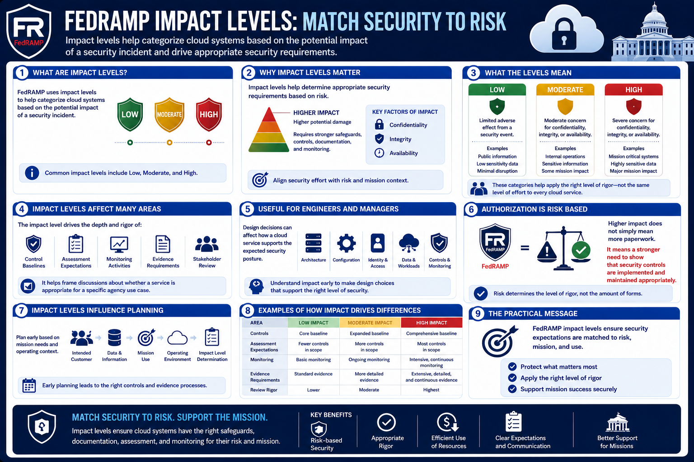

What Is FedRAMP?
Authorization Levels
Connecting to LMS... Progress: in progress
Version 1.0 | Date: 2026-06-16 | Educational overview of FedRAMP concepts.

Narration
FedRAMP uses impact levels to help categorize cloud systems based on the potential impact of a security incident. Common impact levels include Low, Moderate, and High.
Impact levels help determine appropriate security requirements based on risk. A system that could create higher impact if compromised generally requires a stronger set of safeguards, controls, documentation, and monitoring.
Low impact systems may involve information or functions where a security event would have limited adverse effect. Moderate and High impact systems involve progressively greater concern for confidentiality, integrity, or availability.
These categories help agencies and cloud providers align security effort with system sensitivity. The goal is not to apply the same level of rigor to every cloud service, but to match expectations to risk and mission context.
Impact level affects control baselines, assessment expectations, monitoring activities, and the evidence that stakeholders need to review. It also helps frame conversations about whether a service is appropriate for a specific agency use case.
Understanding impact levels is useful for engineers and managers because design decisions can affect how a cloud service supports the expected security posture.
The practical message is that FedRAMP authorization is risk based. Higher impact does not simply mean more paperwork; it means a stronger need to show that security controls are implemented and maintained appropriately.
Impact levels also influence planning. Teams need to understand the intended customer, data, mission use, and operating environment early enough to design controls and evidence processes that fit the expected level.